lmplot 0.3.1 · WebAssembly
gnuplot in your browser, driven by lmcode.
One fixed WebAssembly host, lmplot.wasm (4.6 MB), holds gnuplot, the lmcode virtual machine and the
Plot functions. Each example below is application code: a few kilobytes of lmcode bytecode the page loads at run time and the
host executes. New plots never need a new wasm build.
System layer · C/C++ → wasm
gnuplot (pinned, patched), lmplot's PNG rasterizer and fonts, the lmcode-cpp VM, and the 13 host functions of
schema/lmplot.dsl.json. Built once with Emscripten; runs in a Worker; a fresh instance per run.
Application layer · lmcode
plot.data, plot.cmd, plot.num, plot.png… Configuration, data, computation and
drawing commands live in the program. Loaded as bytecode (browser/examples/<name>.bin) or embedded as an asset.
Thumbnails were rendered by the same wasm host. Open an example to run it live, or run every example now and time it.
Showcase
-
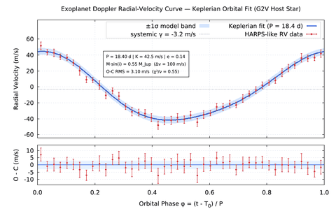
Exoplanet radial-velocity fit Astrophysics / Statistics: 44 phase-folded Doppler radial-velocity measurements of a warm-Jupiter host star, stats round-trip (plot.num), derived planet mass Mp sin i and χ²ν, 2-panel fit + O-C residuals -
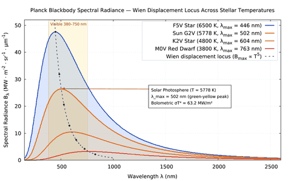
Planck blackbody spectra Physics / Spectroscopy: Planck spectral radiance Bλ(λ, T) across stellar photospheres (3800–6500 K), visible band highlight, Wien displacement locus and bolometric flux σ T^4 -
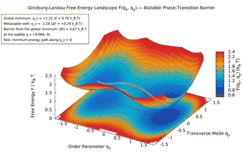
Double-well free-energy surface Condensed Matter / Surfaces: 3D Ginzburg–Landau double-well free-energy landscape F(qx, qy) (pm3d depthorder), base contour projection and minimum-energy transition pathway -
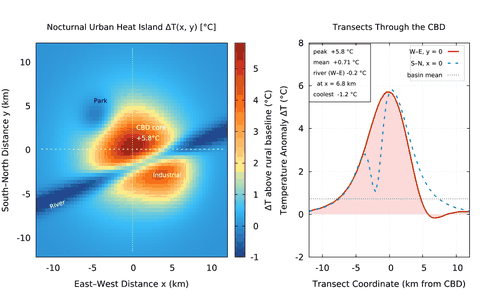
Urban heat island field Meteorology / Heatmaps: 24×24 km nocturnal urban heat island anomaly field Δ T(x, y) (with image) paired with West–East and South–North thermal dome transects and river cooling dip -
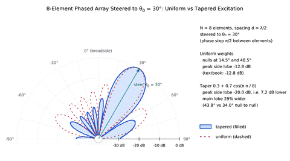
Phased-array beam steering Electromagnetics / Polar: 8-element uniform linear antenna array (d = λ/2) steered to θ0 = 30°, comparing uniform excitation vs cosine-pedestal side-lobe suppression in polar dB gain -
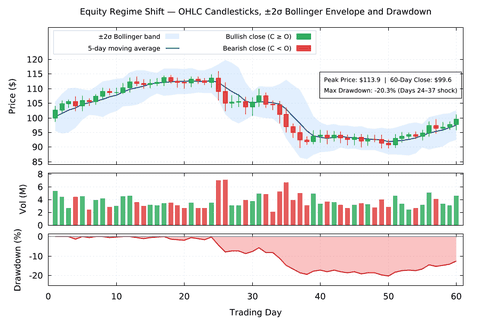
Trading regime dashboard Quantitative Finance: 60-day equity regime shift: OHLC candlesticks, 5-day moving average, ± 2σ Bollinger Band envelope, daily volume bars and underwater peak-to-trough drawdown -
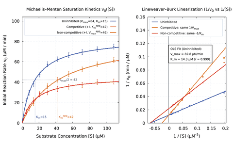
Michaelis–Menten kinetics Biochemistry / Regression: Michaelis–Menten enzyme saturation curves under competitive and non-competitive inhibition paired with Lineweaver–Burk double-reciprocal OLS regression (stats) -
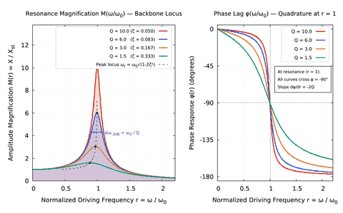
Driven damped resonance Nonlinear Dynamics: Driven damped harmonic oscillator steady-state magnification M(ω/ω0), resonance peak backbone locus, half-power bandwidth and quadrature phase lag φ(ω/ω0) -
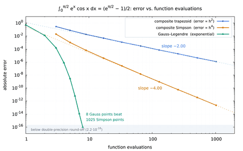
Quadrature convergence Numerical analysis: Trapezoid, Simpson and Gauss–Legendre on ∫0^π/2 e^xcos x dx; fit measures orders 2 and 4 (asserted with plot.assert_close) and 8 Gauss points beat 1025 Simpson points -
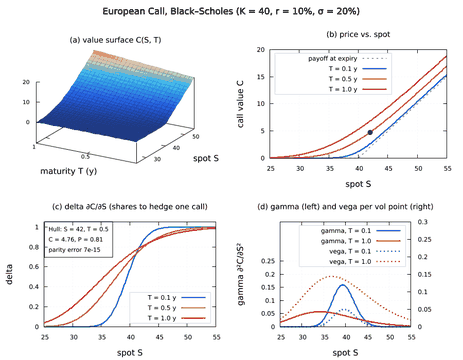
Black–Scholes Greeks Quantitative Finance: Black–Scholes call via gnuplot norm(): value surface, price vs spot, delta, gamma and vega; reproduces Hull's textbook 4.76 / 0.81 and put–call parity
Model evaluation
-
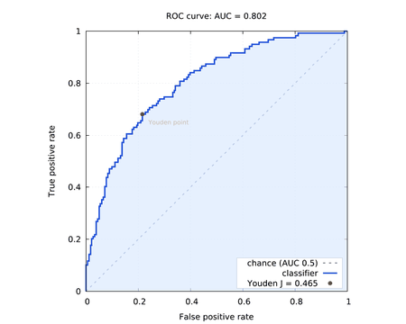
ROC curve and AUC Machine learning: ROC curve of a 300-case synthetic classifier: every observed score is a threshold, AUC by the trapezoid rule checked against the Mann–Whitney pair count, Youden-J operating point marked -
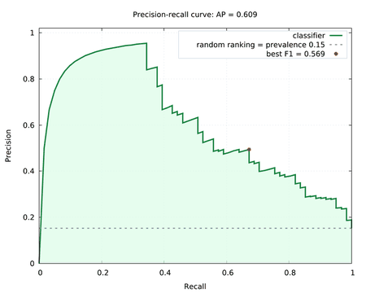
Precision–recall and AP Machine learning: Precision–recall curve of a 400-case detector with 15% positives: average precision as the step-wise sum ∑ (Rk - Rk-1) Pk, prevalence baseline and best-F1 point -
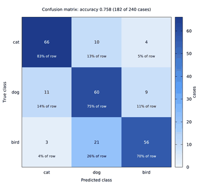
Confusion matrix Machine learning: 3-class confusion matrix (240 cases): counts and row percentages in each cell, label colour chosen per cell for contrast, accuracy checked against the diagonal -
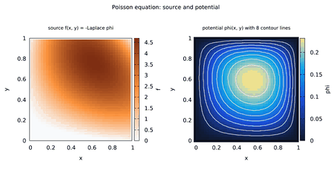
Poisson equation contours Numerical PDE: Poisson equation ∇²φ = -f solved by SOR on a 41×41 grid; the exact cubic-per-variable solution is reproduced to 1e-9, and eight contour lines of φ are drawn over the heat map -
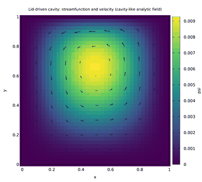
Lid-driven cavity flow Fluid mechanics: Lid-driven cavity: streamfunction heat map with auto-scaled velocity arrows; an analytic creeping-flow-like field, with wall conditions and continuity checked -
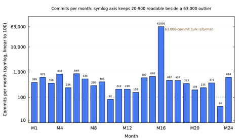
Symlog axis with an outlier Statistics: Monthly commit counts with one 63,000-commit month on a symlog axis (linear to 100, logarithmic beyond), tick labels in the original units -
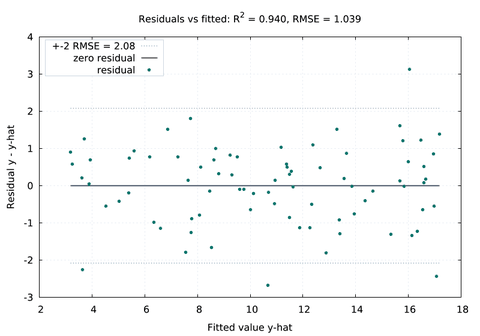
Regression residuals Statistics: Least-squares line through 80 heteroscedastic points; residuals against fitted values with the zero line, ±2 RMSE band, R² and RMSE; zero-sum residuals checked
gnuplot gallery
-
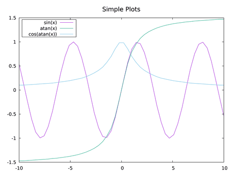
Simple functions functions with points (gnuplot simple.dem) -
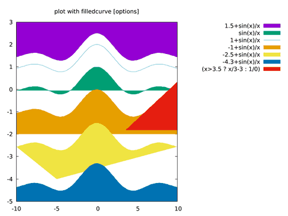
Filled curves every filledcurve mode, parametric fills (gnuplot fillcrvs.dem) -
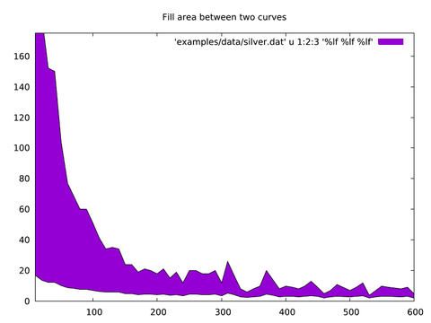
Fill between curves area between two data curves (gnuplot fillbetween.dem) -
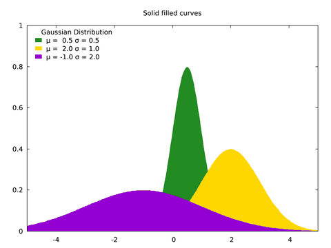
Transparent fills alpha fills and pattern fills (gnuplot transparent.dem) -
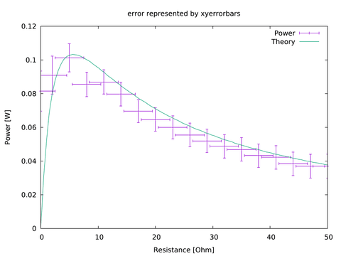
Error bars x/y error bars, boxxyerror, log axis (gnuplot errorbars.dem) -
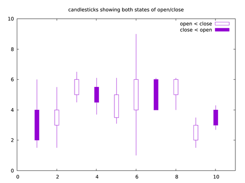
Candlesticks candlesticks and box-and-whisker (gnuplot candlesticks.dem) -
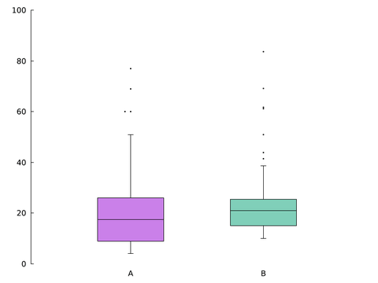
Box plots boxplots, factor colouring (gnuplot boxplot.dem) -
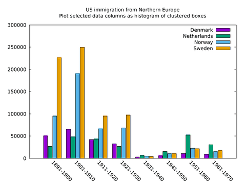
Histograms clustered, stacked and grouped histograms (gnuplot histograms.dem) -
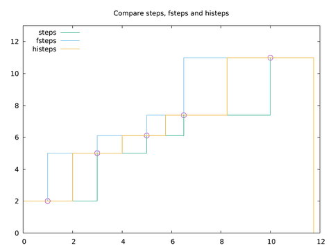
Step plots steps, fsteps, histeps (gnuplot steps.dem) -
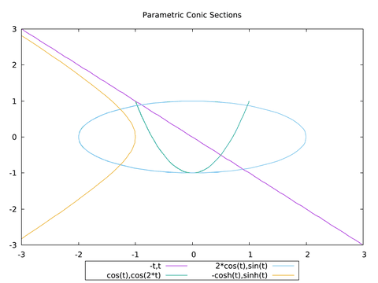
Parametric plots parametric curves and a pm3d sphere (gnuplot param.dem) -
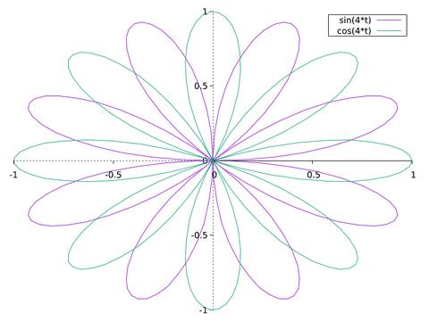
Polar plots polar functions and grids (gnuplot polar.dem) -
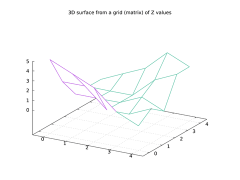
3D surfaces hidden-line surfaces, labels, arrows (gnuplot surface1.dem) -
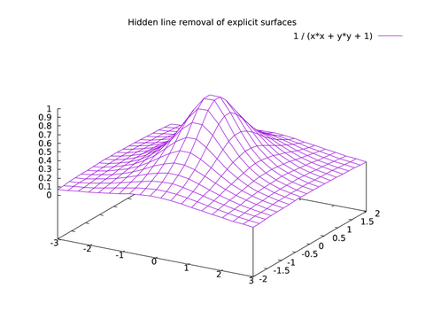
Hidden-line removal hidden3d on explicit surfaces (gnuplot hidden.dem) -
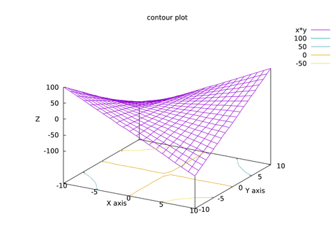
Contours contour lines on base and surface (gnuplot contours.dem) -
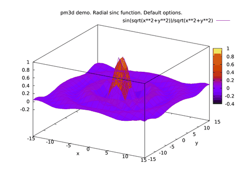
pm3d colour surfaces pm3d surfaces, palette, colorbox, depth order (gnuplot pm3d.dem) -
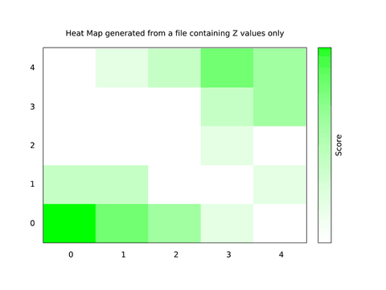
Heat maps images from matrix and XYZ data (gnuplot heatmaps.dem) -
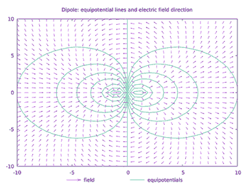
Vector field contours into a table, vector field (gnuplot vector.dem) -
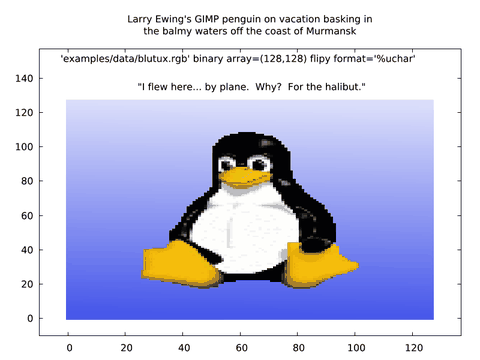
Binary RGB image binary RGB image, rotated copies (gnuplot image.dem) -
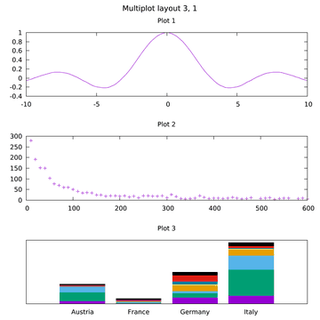
Multiplot layouts multiplot layouts and stacked panels (gnuplot layout.dem) -
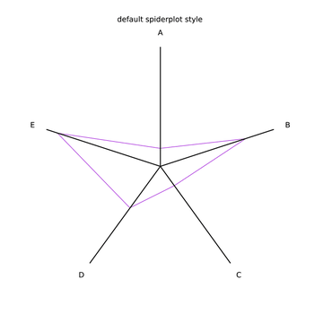
Spider plots spider (radar) plots (gnuplot spiderplot.dem) -
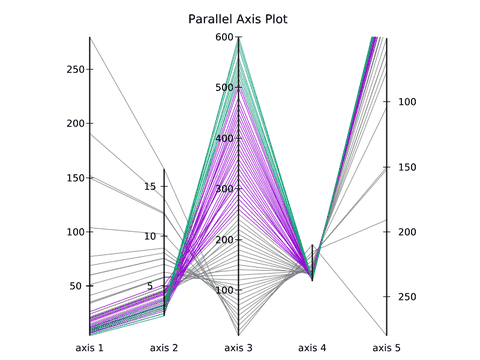
Parallel axes parallel-axis plots (gnuplot parallel.dem) -
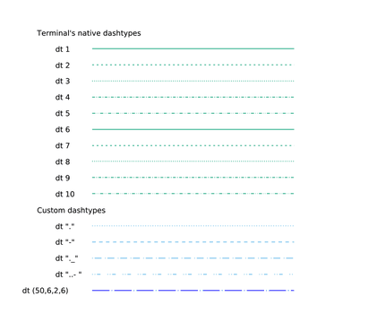
Dash types native and custom dash patterns (gnuplot dashtypes.dem) -
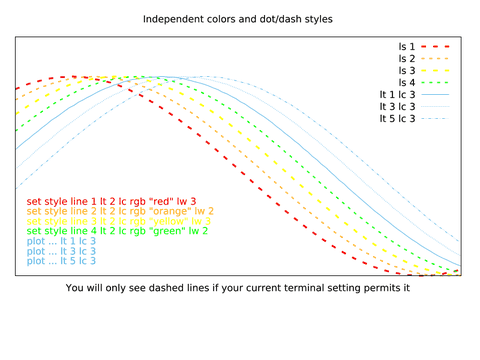
Lines, points and arrows line, point and arrow styles (gnuplot lines_arrows.dem) -
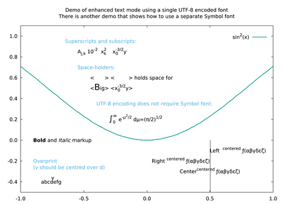
Enhanced text and UTF-8 enhanced text, Symbol and Unicode (gnuplot enhanced_utf8.dem) -
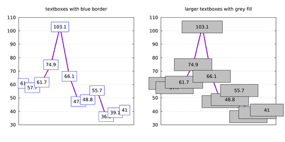
Text boxes and rotated labels boxed and rotated labels (gnuplot textbox.dem, rotate_labels.dem) -
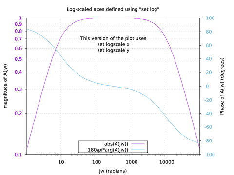
Nonlinear axes logscale versus set nonlinear (gnuplot nonlinear2.dem) -
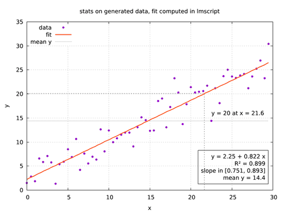
Data, stats and labels generate data in lmscript, stats, compute, label and plot -
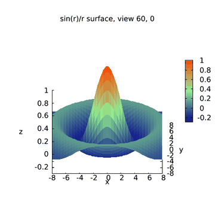
Turntable frames a loop rendering a rotating surface as 8 frames